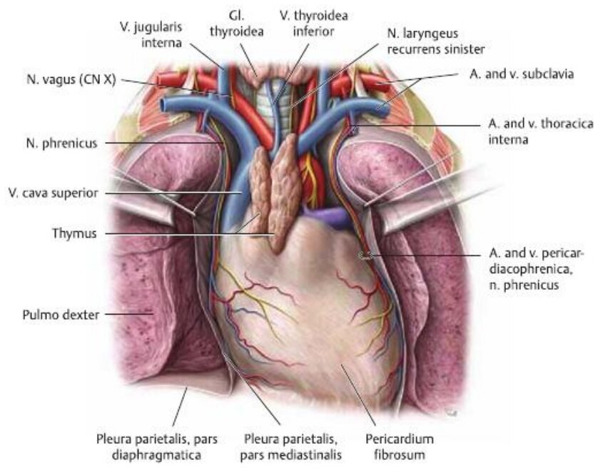
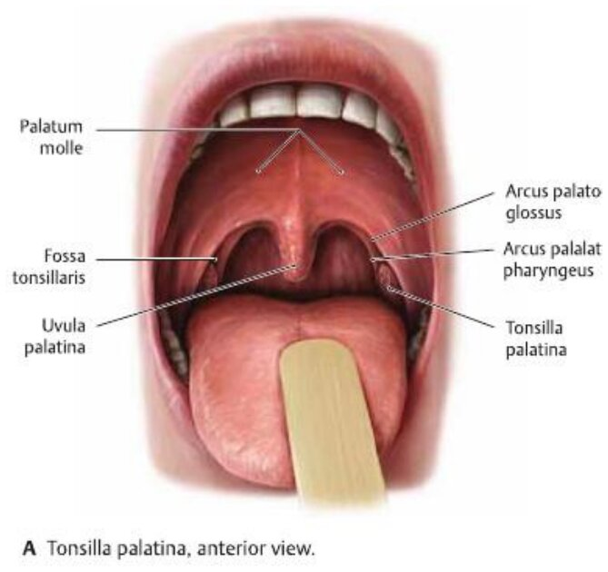
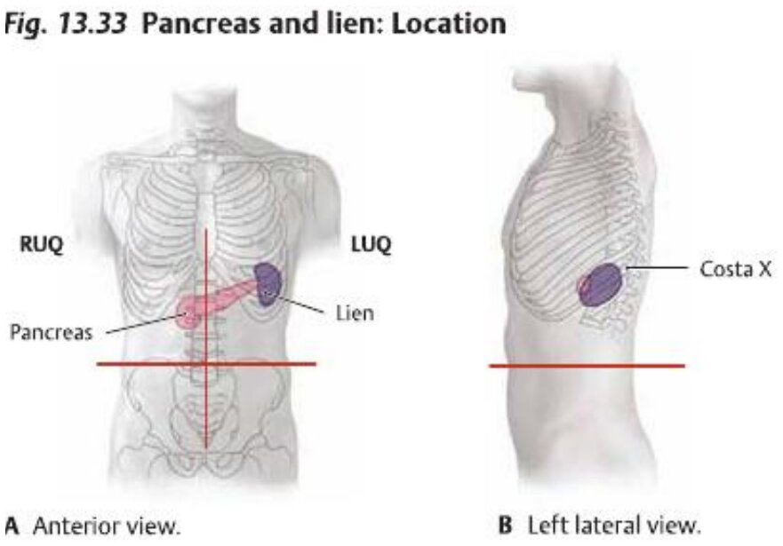
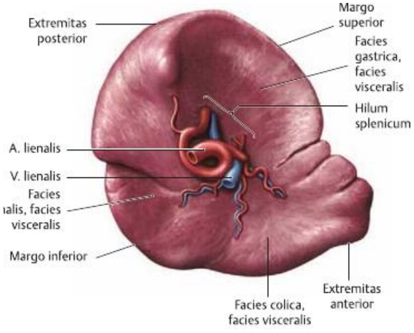
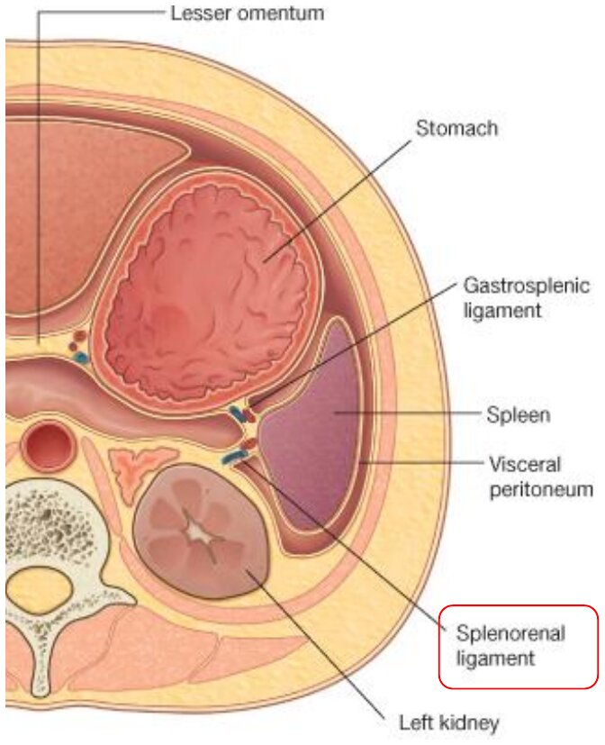
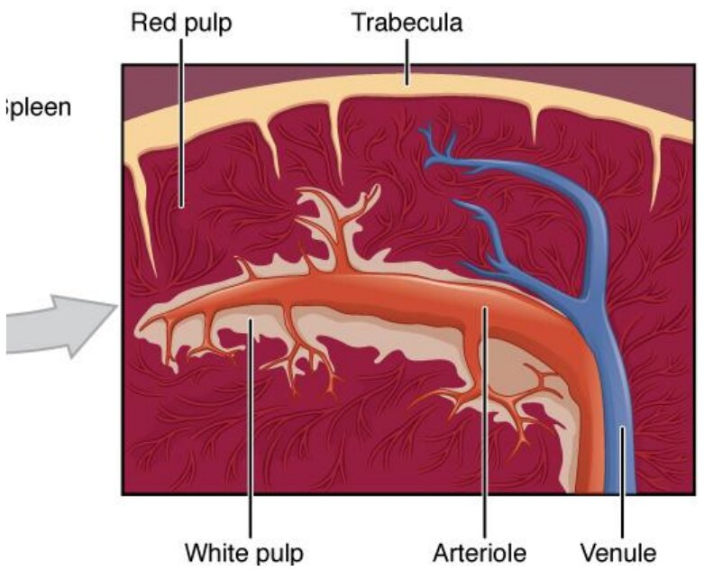

Bölüm 10 · Organa lymphoidea et splen
Bu bölümün çıkmış soruları histoloji ve embriyoloji derslerinden gelmiştir, ama hepsi bu sunumun anlattığı yapılarla cevaplanır: timusun hangi faringeal cepten geliştiği, epitelyoretiküler hücrelerin yerleri ve dalakta beyaz ile kırmızı pulpanın içeriği. Anatomi tarafında sunum dalağın komşuluklarını, bağlarını ve damarlarını klinik olgularla vurgular. Bu bölüm önce primer ve sekonder organları, sonra dalağı anlatır.
Lenfoid organlar iki gruptur. Primer organlar (kemik iliği ve thymus) lenfositlerin geliştiği ve olgunlaştığı yerlerdir. Sekonder organlar (lenf düğümleri, dalak, mukozayla ilişkili lenfoid doku) lenfositlerin antijenle karşılaştığı ve bağışıklık yanıtının başladığı yerlerdir. Üç sekonder organ farklı antijen kaynaklarını örnekler: lenf düğümü lenfle gelen doku antijenlerini, dalak kanla taşınan antijenleri, mukozal lenfoid doku epitel yüzeyine ulaşan antijenleri.
Kemik iliği kemiklerin medüller boşluklarında ve trabeküler aralıklarındadır. Erişkinde aktif kırmızı ilik vertebralar, sternum, kaburgalar ve pelviste, ayrıca humerus ile femurun proksimal uçlarında bulunur. Sarı ilikte yağ dokusu baskındır. B ve T lenfositleri kemik iliğindeki ortak öncüllerden gelişir. B lenfositlerinin gelişimi kemik iliğinde tamamlanır. T lenfosit öncülleri ise kan yoluyla thymus'a göç eder ve olgunlaşmayı orada sürdürür.
Thymus sternumun arkasında, mediastinum superius'ta ve mediastinum anterius'un üst bölümünde uzanan iki loblu bir organdır. Üst uçları boyun köküne uzanabilir. Komşulukları: önde manubrium sterni, arkada perikard ve büyük damarlar (özellikle v. brachiocephalica sinistra), yanlarda mediastinal plevra ve perikard boyunca inen nn. phrenici. Çocukta toraksa göre büyüktür ve grafide sternum arkasında belirgin bir yumuşak doku olarak görülür. Bu görünüm normaldir. Puberteden sonra involüsyon geçirir: işlevsel doku azalır, yerini yağ dokusu alır.

Gelişimi. Timusun epiteli üçüncü faringeal cebin ventral bölümünden, yani endodermden gelişir (Derleme S25). Sağ ve sol taslaklar boyundan mediastinuma iner ve orta hatta birleşir. İniş yolu boyunca ektopik timus dokusu kalabilir. Aynı cebin dorsal bölümü gl. parathyroidea inferior'u oluşturur. Bu yüzden alt paratiroidler timusla birlikte iner ve üsttekilerden daha aşağıda yer alır.
Yapısı. Bağ dokusu kapsülünden içeri uzanan septalar lobları kısmen lobüllere ayırır. Her lobülde koyu boyanan periferik korteks (yoğun timositler) ve açık boyanan medulla vardır. Komşu lobüllerin medüller bölgeleri birbiriyle devamlıdır. Korteksin iskeletini ve medullanın yapısını epitelyoretiküler hücreler oluşturur. T lenfositlerinin pozitif seçilimi ağırlıklı olarak kortekste, negatif seçilimi ve santral tolerans büyük ölçüde medullada gerçekleşir. Negatif seçilim kortekste de olabilir. Medulladaki Hassall cisimcikleri konsantrik dizilmiş epitel hücrelerinden oluşur. Timusun arterleri aa. thoracicae internae ve aa. thyroideae inferiores'ten gelir. Venleri vv. brachiocephalicae'ye açılır. Efferent lenf damarları mediastinal düğümlere gider. Afferent lenf damarı yoktur.
| Epitelyoretiküler hücre | Yeri | Görevi |
|---|---|---|
| Tip I | Korteks: kapsül ve trabekülleri korteksten ayırır, kortikal damarları sarar | Kan-timus bariyeri |
| Tip II | Korteksin orta bölümü | Korteksi bölmelere ayırır, timositlere antijen sunar |
| Tip III | Korteks-medulla sınırı (kortikal taraf) | Sınırda bariyer, antijen sunumu |
| Tip IV | Korteks-medulla sınırı (medüller taraf) | Tip III ile birlikte sınırı oluşturur |
| Tip V | Medulla | Medüller sitoretikulum |
| Tip VI | Medulla | Hassall cisimcikleri |
Lenf düğümünün yapısı Bölüm 9.1'de anlatıldı. Mukozayla ilişkili lenfoid doku sindirim ve solunum yollarının mukozasında dağınık lenfositler ya da organize foliküller hâlinde bulunur. Örnekleri tonsiller, ileumdaki Peyer plakları ve apendiksin lenfoid dokusudur. Mukozadaki lenfoid nodül ile lenf damarları üzerindeki kapsüllü lenf düğümü farklı yapılardır.
Waldeyer halkası farinksin burun ve ağız boşluklarına açılan girişini çevreleyen lenfoid doku halkasıdır. Bileşenleri: nazofarinksin tavanı ve arka duvarındaki tek tonsilla pharyngealis (adenoid), tuba auditiva'nın faringeal açıklığı çevresindeki çift tonsilla tubaria, orofarinksin yan duvarındaki çift tonsilla palatina ve dil kökündeki tonsilla lingualis. Büyümüş faringeal tonsil burun solunumunu ve tuba auditiva'nın işlevini bozabilir. Tonsillerin epitelindeki derin kriptalar mukozal yüzey ile lenfoid doku arasındaki temas alanını artırır.
Tonsilla palatina orofarinksin yan duvarında, fossa tonsillaris içindedir. Önde arcus palatoglossus, arkada arcus palatopharyngeus ile sınırlıdır. Medial yüzü farinks lümenine, lateral yüzü tonsil yatağına bakar. Yatakta kapsülün lateralinde peritonsiller aralık ve m. constrictor pharyngis superior bulunur. N. glossopharyngeus yatağın derininde seyreder ve bölgenin duyusunu alır. Aynı sinir orta kulağın da duyusunu aldığı için tonsil iltihabında ağrı aynı taraftaki kulağa yansır. Başlıca arteri a. facialis'in r. tonsillaris'idir. Lenfi üst derin servikal düğümlere, özellikle angulus mandibulae'nin altında ele gelen nodus jugulodigastricus'a gider.

Peyer plakları ince bağırsakta, özellikle distal ileumda ve antimezenterik tarafta belirgin olan kümelenmiş lenfoid foliküllerdir. Lamina propria ve submukozaya uzanabilir. Folikülün üzerindeki epitelde bulunan M hücreleri lümen içeriğini örnekler. Apendiksin duvarında mukoza ve submukozada foliküller bulunur. Peyer plakları antimezenterik tarafta kümelenirken apendikste foliküller duvarın bütün çevresine yayılır.
Dalak (splen, lien) kapsüllü bir sekonder lenfoid organdır. Sol üst karında, regio hypochondriaca sinistra'da, midenin arka-dış tarafında bulunur. Sol 9.-11. kaburgaların derinindedir ve uzun ekseni yaklaşık 10. kaburga doğrultusundadır. Klasik akılda tutma yolu "1-3-5-7-9-11"dir: yaklaşık 1 × 3 × 5 inç boyutunda, 7 ons ağırlığında, 9. ile 11. kaburgalar arasında. Büyük bölümü visseral peritonla örtülüdür. Diyafram onu sol plevra ve akciğer tabanından ayırır. Normal dalak kostal kavsin altında ele gelmez. Büyüyen dalak inferomediale, göbeğe doğru uzanır. İnspirasyonla aşağı inmesi ve üst kenarındaki çentikler muayenede dalağı tanıtır.


Facies diaphragmatica dışbükey ve düzgündür, diyaframın sol kubbesine yaslanır. Facies visceralis komşu organların izlerini taşır: midenin fundus ve arka yüzüne bakan geniş impressio gastrica, sol böbreğin üst-dış kısmına bakan impressio renalis, alt uçta flexura coli sinistra'nın oluşturduğu impressio colica. Cauda pancreatis hiluma yaklaşır, uzaklığı kişiden kişiye değişir. Margo superior'da, özellikle ön uca yakın çentikler bulunur. Margo inferior daha künttür.
Şekil 10.4 — Dalağın facies visceralis'i. Hilum splenicum'a a. lienalis (splenica) girer, v. lienalis çıkar. Facies gastrica, facies renalis ve facies colica bu yüzün bölümleridir.
Hilum splenicum facies visceralis üzerindedir. A. splenica'nın uç dalları, venler, efferent lenf damarları ve sinirler buradan girip çıkar. Dalağı çevre yapılara bağlayan periton kıvrımları şunlardır:
| Bağ | Bağladığı yerler | İçeriği ve önemi |
|---|---|---|
| Lig. gastrosplenicum | Hilum ↔ midenin büyük kurvaturu | Vasa gastrica brevia ve vasa gastroomentalia sinistra. Dalak mideden ayrılırken bu damarlar bağlanır. |
| Lig. splenorenale | Hilum ↔ sol böbreğin önündeki arka karın duvarı | A. ve v. splenica ve cauda pancreatis. Hilus diseksiyonunda pankreas kuyruğu zedelenebilir. |
| Lig. phrenicocolicum | Flexura coli sinistra ↔ diyafram | Dalağı alttan destekler. |
Bursa omentalis'in sola uzanan recessus splenicus'u dalağın hilumuna doğru uzanır. Bu uzantıyı önde lig. gastrosplenicum, arkada lig. splenorenale sınırlar.

A. splenica genellikle truncus coeliacus'un en kalın dalıdır. Pankreasın üst kenarı boyunca, çoğunlukla kıvrımlı olarak sola gider. Seyri boyunca pankreasa dallar, lig. gastrosplenicum içinde mide fundusuna aa. gastricae breves ve büyük kurvatura a. gastroomentalis sinistra verir (Bölüm 4.2). Hiluma yaklaşırken dalak parankiminin farklı bölgelerini besleyen uç dallarına ayrılır. Bu dallar arasındaki bağlantılar sınırlıdır. Bir dalın tıkanması bu yüzden bölgesel (segmental) dalak infarktına yol açar. Polar arterlerin varlığı ve dallanma düzeni değişkendir.
V. splenica hilumdan çıkan venlerin birleşmesiyle oluşur, pankreasın arka yüzü boyunca sağa gider ve collum pancreatis'in arkasında v. mesenterica superior ile birleşerek v. portae'yi oluşturur. Vv. gastricae breves, v. gastroomentalis sinistra, vv. pancreaticae ve sıklıkla v. mesenterica inferior ona açılır (Bölüm 6.2). Dalağın afferent lenf damarı yoktur. Efferentler hilumdan çıkar, splenik damarlar boyunca pankreatikosplenik düğümlere ve oradan çölyak düğümlere gider. Sinirleri plexus coeliacus'tan gelir ve a. splenica çevresinde dalağa ulaşır.
Histoloji. Fibroelastik kapsül parankimi sarar ve içeri damarları taşıyan trabeküller uzatır. Parankim iki bölümdür:

Kan trabeküler arterlerden merkezi arteriyollere ve daha küçük dallara ilerler. Bir bölümü kırmızı pulpa kordonlarına dökülür ve sinüzoidlere geçer. Sinüzoidlerden toplanan kan pulpa ve trabekül venleriyle v. splenica'ya yönelir. Dalak pulpasında lenf damarı bulunmaz. Lenf damarları kapsül ve trabeküllerdedir.
Dalak histolojisi sorusunun beş şıkkı yer değiştirme tuzağıdır (2023-2024 histoloji S7). Malpighi cisimcikleri beyaz pulpadadır, kırmızı değil. Billroth kordonları kırmızı pulpadadır, beyaz değil. PALS'ta T lenfositleri baskındır, B değil. Pulpada lenf damarı yoktur. Doğru ifade şudur: stave hücreleri kırmızı pulpadaki sinüzoidleri döşer.
Klinik önemi. (1) Travma: sol alt kaburgalara künt darbe dalağı yırtabilir. Karın içindeki kan diyaframın alt yüzündeki peritonu irrite eder. Bu duyu n. phrenicus ile C3-C5 segmentlerine taşındığı için ağrı sol omuza yansır (Kehr bulgusu). (2) Splenektomi: hilus diseksiyonunda lig. splenorenale içindeki cauda pancreatis yaralanabilir ve pankreas kaçağı gelişebilir. (3) Aksesuar dalak: dalak dorsal mezogastriumdaki mezenşimden gelişir. Ana dalaktan ayrı kalan doğuştan dalak dokusu en sık hilum çevresinde ve cauda pancreatis yakınındadır. Splenektomide gözden kaçarsa hastalık tekrarlayabilir.
Doğru: D. Kırmızı pulpanın venöz sinüzoidleri, aralarında dar yarıklar bırakan çubuk biçimli endotel hücreleriyle (stave hücreleri) döşelidir.
A yanlış: Malpighi cisimcikleri (lenfoid foliküller) beyaz pulpadadır. B yanlış: Billroth kordonları kırmızı pulpanın sinüzoidleri arasındadır. C yanlış: dalak pulpasında lenf damarı yoktur, lenf damarları kapsül ve trabeküllerdedir. Dalağın afferent lenf damarı da yoktur. E yanlış: PALS'ta T lenfositleri baskındır. B lenfositleri foliküllerdedir.
Doğru: A. Timusun epiteli üçüncü faringeal cebin ventral bölümünden gelişir. Aynı cebin dorsal bölümü alt paratiroid bezini oluşturur.
B ve E yanlış: faringeal membranlar ektoderm ile endodermin temas yeridir. Birinci membran kulak zarına katılır, diğerleri iz bırakmaz. C yanlış: birinci faringeal cep orta kulak boşluğunu ve tuba auditiva'yı oluşturur. D yanlış: beşinci cep genellikle dördüncü cebin parçası sayılır ve ultimobrankiyal cisimle ilişkilidir.
Doğru: C. Tip III hücreler sınırın kortikal tarafında, tip IV hücreler medüller tarafında yer alır ve birlikte korteks-medulla sınırını oluşturur.
A ve B yanlış: tip I ve tip II hücreler korteksin içindedir. Tip I kan-timus bariyerini kurar, tip II korteksin ortasındadır. D ve E yanlış: tip V ve tip VI hücreler medulladadır. Tip VI Hassall cisimciklerini oluşturur.
Doğru: C. Tip II hücreler korteksin orta bölümündedir. Korteks-medulla sınırını tip III ve tip IV hücreler oluşturur.
A doğrudur: timus epiteli üçüncü faringeal cebin endoderminden gelişir. B doğrudur: tip I hücreler kortikal damarları sarar ve kan-timus bariyerine katılır. D doğrudur: tip V hücreler medüller sitoretikulumu oluşturur. E doğrudur: tip VI hücreler konsantrik dizilerek Hassall cisimciklerini oluşturur.
Doğru: E. Duodenum orta hattın sağında, pankreas başının çevresindedir. Sol hipokondriyumdaki dalağa ulaşmaz.
A yanlış: mide impressio gastrica'yı oluşturur. B yanlış: sol böbrek impressio renalis'i oluşturur. C yanlış: flexura coli sinistra alt uçta impressio colica'yı oluşturur. D yanlış: cauda pancreatis lig. splenorenale içinde hiluma kadar uzanabilir.
Doğru: B. Lig. gastrosplenicum dalak hilumunu midenin büyük kurvaturuna bağlar. İçinde fundusa giden kısa gastrik damarlar ve büyük kurvaturun sol yarısının gastroomental damarları bulunur.
A yanlış: ana splenik damarlar lig. splenorenale içinde seyreder. C yanlış: sol gastrik damarlar omentum minus'ta, küçük kurvaturdadır. D yanlış: a. gastroduodenalis duodenumun arkasındadır. E yanlış: sağ gastroomental damarlar büyük kurvaturun sağ yarısındadır ve omentum majus'ta seyreder.
Doğru: A. N. glossopharyngeus tonsil yatağının derininde, m. constrictor pharyngis superior'un yakınında seyreder ve tonsil bölgesinin duyusunu alır. Timpanik dalı orta kulağın da duyusunu aldığı için ağrı kulağa yansır.
B yanlış: n. vagus kulak kepçesinin arkasına ve dış kulak yoluna duyu dalı verir, ama tonsil yatağında seyretmez. C yanlış: n. facialis'in tonsille duyusal ilişkisi yoktur. D yanlış: n. lingualis dilin ön 2/3'ünün genel duyusunu alır. E yanlış: n. hypoglossus motor sinirdir.
Doğru: C. Dalak yaralanmasında karın içindeki kan diyaframın merkezî bölümünü örten peritonu irrite eder. Bu bölgenin duyusu n. phrenicus ile C3-C5 segmentlerine taşınır. Aynı segmentler omuz derisinin duyusunu aldığı için ağrı omuza yansır.
A yanlış: n. vagus visseral afferentleri taşır ama omuza yansıyan ağrıyı açıklamaz. B yanlış: alt interkostal sinirler diyaframın çevresel kısmının ve karın duvarının duyusunu alır. D yanlış: n. splanchnicus major üst karın organlarının ağrısını T5-T9 segmentlerine taşır. E yanlış: n. accessorius motor sinirdir.
Doğru: D. Pankreas kuyruğu lig. splenorenale içinde splenik damarlarla birlikte hiluma kadar uzanabilir. Diseksiyonda yaralanırsa pankreas salgısı sızar.
A yanlış: flexura coli sinistra dalağın alt ucuyla komşudur ama bağın içinde değildir. B yanlış: sol böbreküstü bezi böbreğin üst kutbundadır, retroperitonealdir. C yanlış: ureter çok daha aşağıda, retroperitonealdir. E yanlış: mide fundusu lig. gastrosplenicum ile bağlıdır.
Doğru: B. Tonsilla palatina'nın efferentleri üst derin servikal düğümlere, özellikle m. digastricus'un arka karnı ile VJİ'nin çaprazlaştığı yerdeki nodus jugulodigastricus'a gider. Bu yüzden ona "tonsil düğümü" de denir.
A yanlış: submental düğümler çene ucu, alt dudak ortası ve dil ucunun lenfini alır. C ve E yanlış: oksipital ve mastoid düğümler saçlı derinin arka kısmını drene eder. D yanlış: parotis düğümleri yüzün yan kısmını, kulak kepçesini ve parotis bezini drene eder.